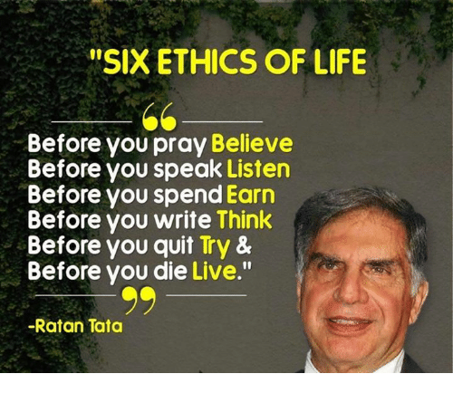

"Take the stones people throw at you. And use them to build a monument."

Biography
Head of Tata Sons--conglomerate with interests in everything from tea to steel--is India's best brand ambassador.
Made automotive history last year with his $2,200 Tata Nano, the world's cheapest auto. Calls Nano "The People's Car"
In nation of a billion, environmentalists call it eco-disaster. Not far off: After Nano debuted in 2008, India's passenger car sales rose most in three years in 2009; three Tata competitors now working on Nano copycats.